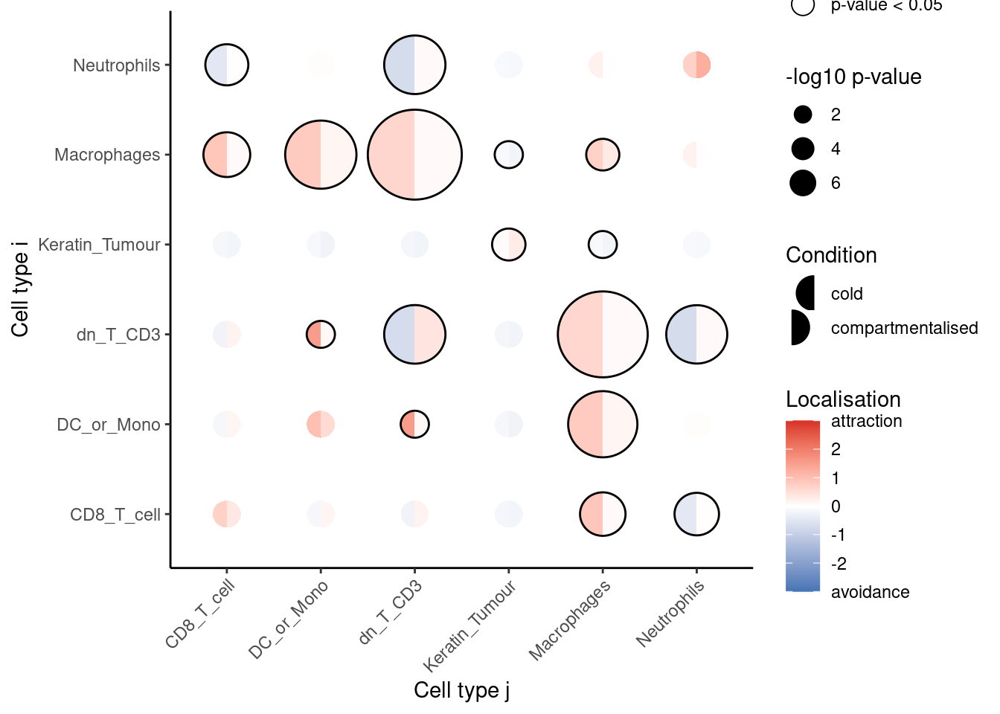
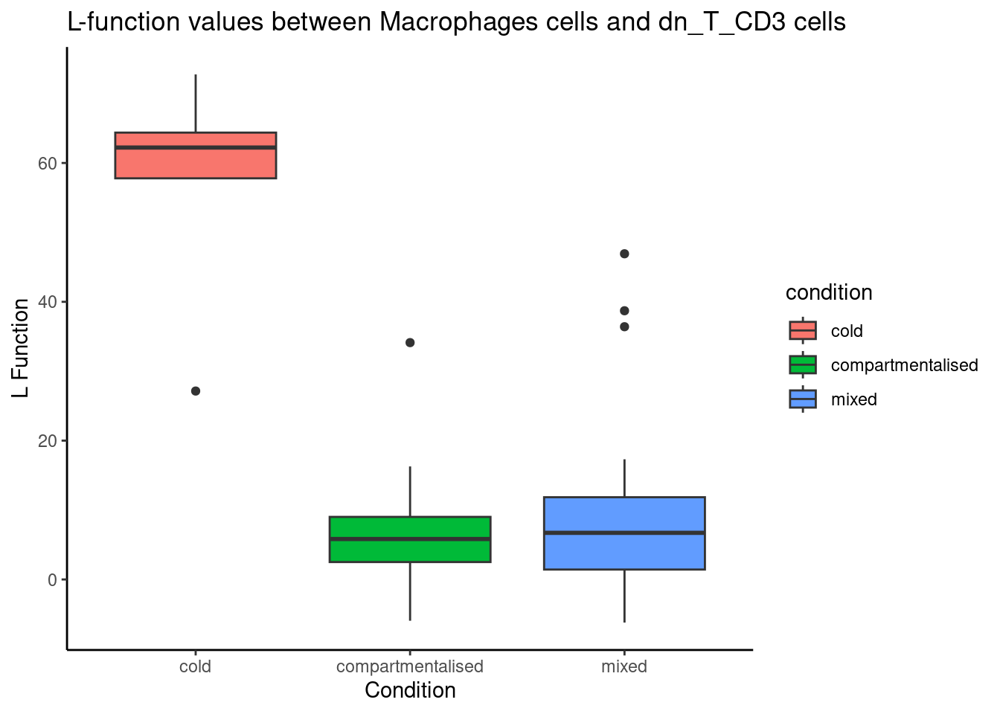
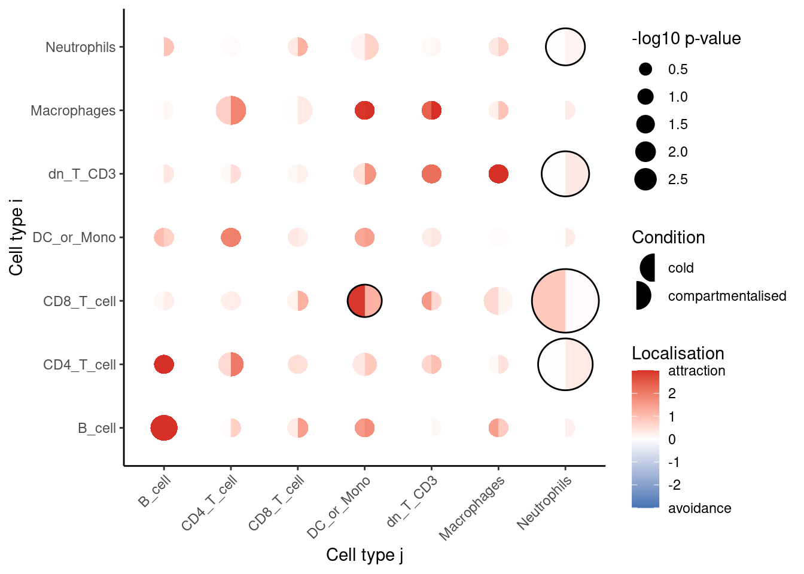

# load required packages
library(spicyR)
library(ggplot2)
library(SpatialExperiment)
library(SpatialDatasets)
library(imcRtools)
library(dplyr)
library(survival)5 Cell localisation
Steps:
- Differential proportions of cells (spicyR::getProp)
- Differential localisation of cells (spicyR)
- Differential region proportions (lisaClust)
- Differential localisation of cells with respect to a parent (Kontextual)
- Differential cell-cell interactions (SpatioMark)
5.1 spicyR
This guide provides step-by-step instructions on how to apply a linear model to multiple segmented and labelled images to assess how the localisation of different cell types changes across different disease conditions.
We use the (keren2018?) breast cancer dataset to compare the spatial distribution of immune cells in individuals with different levels of tumour infiltration (cold and compartmentalised).
The data is stored as a SpatialExperiment object and contains single-cell spatial data from 41 images.
kerenSPE <- SpatialDatasets::spe_Keren_2018()The cell types in this dataset includes 11 immune cell types (double negative CD3 T cells, CD4 T cells, B cells, monocytes, macrophages, CD8 T cells, neutrophils, natural killer cells, dendritic cells, regulatory T cells), 2 structural cell types (endothelial, mesenchymal), 2 tumour cell types (keratin+ tumour, tumour) and one unidentified category.
5.1.1 Linear modelling
To investigate changes in localisation between two different cell types, we measure the level of localisation between two cell types by modelling with the L-function. The L-function is a variance-stabilised K-function given by the equation
\[ \widehat{L_{ij}} (r) = \sqrt{\frac{\widehat{K_{ij}}(r)}{\pi}} \]
with \(\widehat{K_{ij}}\) defined as
\[ \widehat{K_{ij}} (r) = \frac{|W|}{n_i n_j} \sum_{n_i} \sum_{n_j} 1 \{d_{ij} \leq r \} e_{ij} (r) \]
where \(\widehat{K_{ij}}\) summarises the degree of co-localisation of cell type \(j\) with cell type \(i\), \(n_i\) and \(n_j\) are the number of cells of type \(i\) and \(j\), \(|W|\) is the image area, \(d_{ij}\) is the distance between two cells and \(e_{ij} (r)\) is an edge correcting factor.
Specifically, the mean difference between the experimental function and the theoretical function is used as a measure for the level of localisation, defined as
\[ u = \sum_{r' = r_{\text{min}}}^{r_{\text{max}}} \widehat L_{ij, \text{Experimental}} (r') - \widehat L_{ij, \text{Poisson}} (r') \]
where \(u\) is the sum is taken over a discrete range of \(r\) between \(r_{\text{min}}\) and \(r_{\text{max}}\). Differences of the statistic \(u\) between two conditions is modelled using a weighted linear model.
5.2 Test for change in localisation for a specific pair of cells
Firstly, we can test whether one cell type tends to be more localised with another cell type in one condition compared to the other. This can be done using the spicy() function, where we specify the condition parameter.
In this example, we want to see whether or not neutrophils (to) tend to be found around CD8 T cells (from) in compartmentalised tumours compared to cold tumours. Given that there are 3 conditions, we can specify the desired conditions by setting the order of our condition factor. spicy will choose the first level of the factor as the base condition and the second level as the comparison condition. spicy will also naturally coerce the condition column into a factor if it is not already a factor. The column containing cell type annotations can be specified using the cellTypeCol argument. By default, spicy uses the column named cellType in the SpatialExperiment object.
spicyTestPair <- spicy(
kerenSPE,
condition = "tumour_type",
from = "CD8_T_cell",
to = "Neutrophils"
)
topPairs(spicyTestPair) intercept coefficient p.value adj.pvalue
CD8_T_cell__Neutrophils -109.081 112.0185 2.166646e-05 2.166646e-05
from to
CD8_T_cell__Neutrophils CD8_T_cell NeutrophilsWe obtain a spicy object which details the results of the modelling performed. The topPairs() function can be used to obtain the associated coefficients and p-value.
As the coefficient in spicyTestPair is positive, we find that neutrophils are significantly more likely to be found near CD8 T cells in the compartmentalised tumours group compared to the cold tumour group.
5.3 Test for change in localisation for all pairwise cell combinations
We can perform what we did above for all pairwise combinations of cell types by excluding the from and to parameters in spicy().
spicyTest <- spicy(
kerenSPE,
condition = "tumour_type"
)
topPairs(spicyTest) intercept coefficient p.value adj.pvalue
Macrophages__dn_T_CD3 56.446064 -50.08474 1.080273e-07 3.035568e-05
dn_T_CD3__Macrophages 54.987151 -48.38664 2.194018e-07 3.082595e-05
Macrophages__DC_or_Mono 73.239404 -59.90361 5.224660e-06 4.893765e-04
DC_or_Mono__Macrophages 71.777087 -58.46833 7.431172e-06 5.220399e-04
dn_T_CD3__dn_T_CD3 -63.786032 100.61010 2.878804e-05 1.208706e-03
Neutrophils__dn_T_CD3 -63.141840 69.64356 2.891872e-05 1.208706e-03
dn_T_CD3__Neutrophils -63.133725 70.15508 3.011012e-05 1.208706e-03
DC__Macrophages 96.893239 -92.55112 1.801300e-04 5.758129e-03
Macrophages__DC 96.896215 -93.25194 1.844241e-04 5.758129e-03
CD4_T_cell__Keratin_Tumour -4.845037 -22.14995 2.834659e-04 7.409016e-03
from to
Macrophages__dn_T_CD3 Macrophages dn_T_CD3
dn_T_CD3__Macrophages dn_T_CD3 Macrophages
Macrophages__DC_or_Mono Macrophages DC_or_Mono
DC_or_Mono__Macrophages DC_or_Mono Macrophages
dn_T_CD3__dn_T_CD3 dn_T_CD3 dn_T_CD3
Neutrophils__dn_T_CD3 Neutrophils dn_T_CD3
dn_T_CD3__Neutrophils dn_T_CD3 Neutrophils
DC__Macrophages DC Macrophages
Macrophages__DC Macrophages DC
CD4_T_cell__Keratin_Tumour CD4_T_cell Keratin_TumourAgain, we obtain a spicy object which outlines the result of the linear models performed for each pairwise combination of cell types.
We can also examine the L-function metrics of individual images by using the convenient bind() function on our spicyTest results object.
bind(spicyTest)[1:5, 1:5] imageID condition Keratin_Tumour__Keratin_Tumour
1 1 mixed -2.300602
2 2 mixed -1.989699
3 3 compartmentalised 11.373530
4 4 compartmentalised 33.931133
5 5 compartmentalised 17.922818
dn_T_CD3__Keratin_Tumour B_cell__Keratin_Tumour
1 -5.298543 -20.827279
2 -16.020022 3.025815
3 -21.857447 -24.962913
4 -36.438476 -40.470221
5 -20.816783 -38.138076The results can be represented as a bubble plot using the signifPlot() function.
signifPlot(
spicyTest,
breaks = c(-3, 3, 1),
marksToPlot = c("Macrophages", "DC_or_Mono", "dn_T_CD3", "Neutrophils",
"CD8_T_cell", "Keratin_Tumour")
)
Here, we can observe that the most significant relationships occur between macrophages and double negative CD3 T cells, suggesting that the two cell types are far more dispersed in compartmentalised tumours compared to cold tumours.
To examine a specific cell type-cell type relationship in more detail, we can use spicyBoxplot() and specify either from = "Macrophages" and to = "dn_T_CD3" or rank = 1.
spicyBoxPlot(results = spicyTest,
# from = "Macrophages",
# to = "dn_T_CD3"
rank = 1)Warning: Removed 2 rows containing non-finite outside the scale range
(`stat_boxplot()`).
5.3.1 Linear modelling for custom metrics
spicyR can also be applied to custom distance or abundance metrics. A kNN interactions graph can be generated with the function buildSpatialGraph from the imcRtools package. This generates a colPairs object inside of the SpatialExperiment object.
spicyR provides the function convPairs for converting a colPairs object into an abundance matrix by calculating the average number of nearby cells types for every cell type for a given k. For example, if there exists on average 5 neutrophils for every macrophage in image 1, the column Neutrophil__Macrophage would have a value of 5 for image 1.
kerenSPE <- imcRtools::buildSpatialGraph(kerenSPE,
img_id = "imageID",
type = "knn", k = 20,
coords = c("x", "y"))'sample_id's are duplicated across 'SpatialExperiment' objects to cbind; appending sample indices.The returned object is ordered by the 'imageID' entry.pairAbundances <- convPairs(kerenSPE,
colPair = "knn_interaction_graph")
head(pairAbundances["B_cell__B_cell"]) B_cell__B_cell
1 12.7349608
10 0.2777778
11 0.0000000
12 1.3333333
13 1.2200957
14 0.0000000The custom distance or abundance metrics can then be included in the analysis with the alternateResult parameter. The Statial package contains other custom distance metrics which can be used with spicy.
spicyTestColPairs <- spicy(
kerenSPE,
condition = "tumour_type",
alternateResult = pairAbundances,
weights = FALSE
)
topPairs(spicyTestColPairs) intercept coefficient p.value adj.pvalue
CD8_T_cell__Neutrophils 0.833333333 -0.7592968 0.002645466 0.3291833
B_cell__Tumour 0.001937984 0.2602822 0.004872664 0.3291833
Other_Immune__NK 0.012698413 0.2612881 0.005673068 0.3291833
Unidentified__CD8_T_cell 0.106626794 0.6387339 0.005906526 0.3291833
dn_T_CD3__NK 0.004242424 0.2148797 0.006317829 0.3291833
CD4_T_cell__Neutrophils 0.036213602 0.2947696 0.007902670 0.3291833
Tregs__CD4_T_cell 0.128876212 0.5726201 0.010207087 0.3291833
Endothelial__DC 0.008771930 0.3008523 0.011189533 0.3291833
Tumour__Neutrophils 0.021638939 0.2529045 0.011388850 0.3291833
Mesenchymal__Neutrophils 0.004504505 0.2494301 0.012761315 0.3291833
from to
CD8_T_cell__Neutrophils CD8_T_cell Neutrophils
B_cell__Tumour B_cell Tumour
Other_Immune__NK Other_Immune NK
Unidentified__CD8_T_cell Unidentified CD8_T_cell
dn_T_CD3__NK dn_T_CD3 NK
CD4_T_cell__Neutrophils CD4_T_cell Neutrophils
Tregs__CD4_T_cell Tregs CD4_T_cell
Endothelial__DC Endothelial DC
Tumour__Neutrophils Tumour Neutrophils
Mesenchymal__Neutrophils Mesenchymal NeutrophilssignifPlot(
spicyTestColPairs,
breaks = c(-3, 3, 1),
marksToPlot = c("Macrophages", "dn_T_CD3", "CD4_T_cell",
"B_cell", "DC_or_Mono", "Neutrophils", "CD8_T_cell")
)
5.3.2 Performing survival analysis
spicy can also be used to perform survival analysis to asses whether changes in co-localisation between cell types are associated with survival probability. spicy requires the SingleCellExperiment object being used to contain a column called survival as a Surv object.
kerenSPE$event = 1 - kerenSPE$Censored
kerenSPE$survival = Surv(kerenSPE$`Survival_days_capped*`, kerenSPE$event)We can then perform survival analysis using the spicy function by specifying condition = "survival". We can then access the corresponding coefficients and p-values by accessing the survivalResults slot in the spicy results object.
# Running survival analysis
spicySurvival = spicy(kerenSPE,
condition = "survival")
# top 10 significant pairs
head(spicySurvival$survivalResults, 10)# A tibble: 10 × 4
test coef se.coef p.value
<chr> <dbl> <dbl> <dbl>
1 Other_Immune__Tregs 0.0236 0.00866 0.00000893
2 CD4_T_cell__Tregs 0.0177 0.00685 0.0000124
3 Tregs__Other_Immune 0.0237 0.00873 0.0000126
4 Tregs__CD4_T_cell 0.0171 0.00676 0.0000285
5 CD8_T_cell__CD8_T_cell 0.00605 0.00272 0.000332
6 Tumour__CD8_T_cell -0.0305 0.0114 0.000617
7 CD8_T_cell__Tumour -0.0305 0.0116 0.000721
8 CD4_T_cell__dn_T_CD3 0.00845 0.00353 0.000794
9 dn_T_CD3__CD4_T_cell 0.00840 0.00353 0.000937
10 DC__Other_Immune -0.0289 0.0123 0.00103 5.3.3 Accounting for tissue inhomogeneity
The spicy function can also account for tissue inhomogeneity to avoid false positives or negatives. This can be done by setting the sigma = parameter within the spicy function. By default, sigma is set to NULL, and spicy assumes a homogeneous tissue structure.
For example, when we examine the L-function for Keratin_Tumour__Neutrophils when sigma = NULL and Rs = 100, the value is positive, indicating attraction between the two cell types.
# filter SPE object to obtain image 24 data
kerenSubset = kerenSPE[, colData(kerenSPE)$imageID == "24"]
pairwiseAssoc = getPairwise(kerenSubset,
sigma = NULL,
Rs = 100) |>
as.data.frame()
pairwiseAssoc[["Keratin_Tumour__Neutrophils"]][1] 10.88892When we specify sigma = 20 and re-calculate the L-function, it indicates that there is no relationship between Keratin_Tumour and Neutrophils, i.e., there is no major attraction or dispersion, as it now takes into account tissue inhomogeneity.
pairwiseAssoc = getPairwise(kerenSubset,
sigma = 20,
Rs = 100) |>
as.data.frame()
pairwiseAssoc[["Keratin_Tumour__Neutrophils"]][1] 0.9024836# obtain colData for image 24
cData = colData(kerenSPE) |> as.data.frame() |>
dplyr::filter(imageID == "24")
# obtain cells present in image 24
coords = spatialCoords(kerenSPE) |> as.data.frame()
coords$cellID = rownames(coords)
coords = coords |> dplyr::filter(cellID %in% cData$CellID)
cData$X = coords$x
cData$Y = coords$y
cData = cData |>
dplyr::mutate(cellTypeNew = ifelse(cellType %in% c("Keratin_Tumour", "Neutrophils"),
cellType, "Other"))
pal = setNames(c("#d6b11c", "#850f07"),
c("Keratin_Tumour", "Neutrophils"))
ggplot() +
stat_density_2d(data = cData, aes(x = X, y = Y, fill = after_stat(density)),
geom = "raster",
contour = FALSE) +
geom_point(data = cData |> filter(cellType != "Other"),
aes(x = X, y = Y, colour = cellTypeNew), size = 1) +
scale_color_manual(values = pal) +
scale_fill_distiller(palette = "Blues", direction = 1) +
theme_classic() +
labs(title = "image ID: 24")
Plotting image 24 shows that the supposed co-localisation occurs due to the dense cluster of cells near the top of the image.
5.3.4 Mixed effects modelling
spicyR supports mixed effects modelling when multiple images are obtained for each subject. In this case, subject is treated as a random effect and condition is treated as a fixed effect. To perform mixed effects modelling, we can specify the subject parameter in the spicy function.
spicyMixedTest <- spicy(
diabetesData,
condition = "stage",
subject = "case"
)